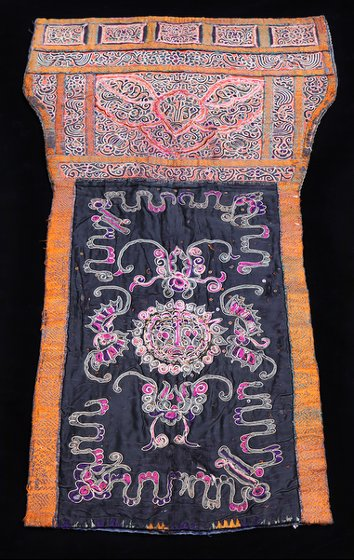
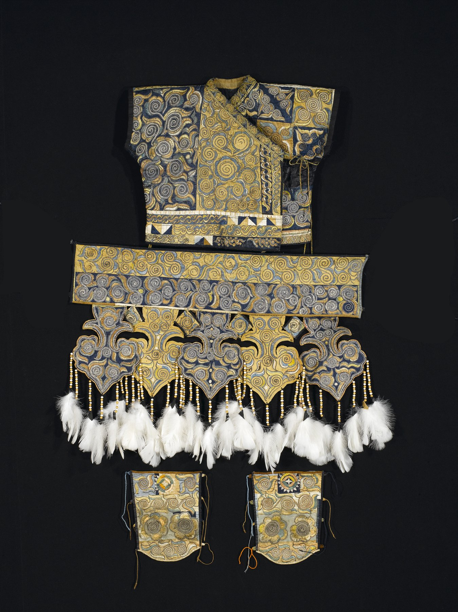
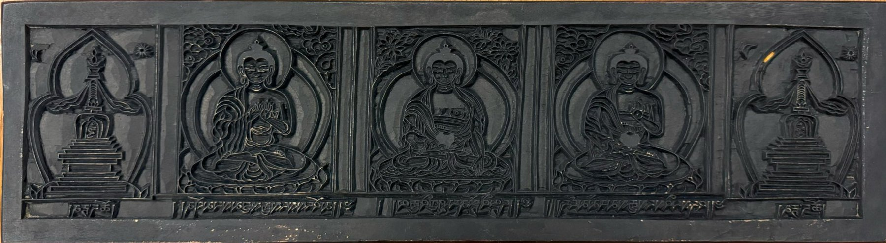
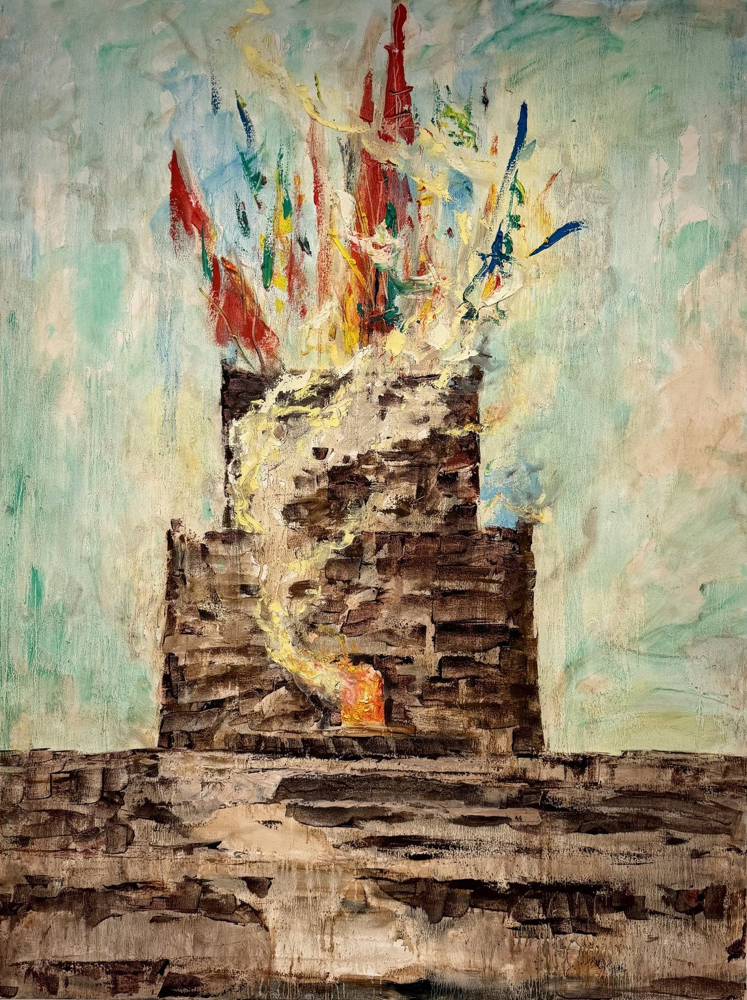
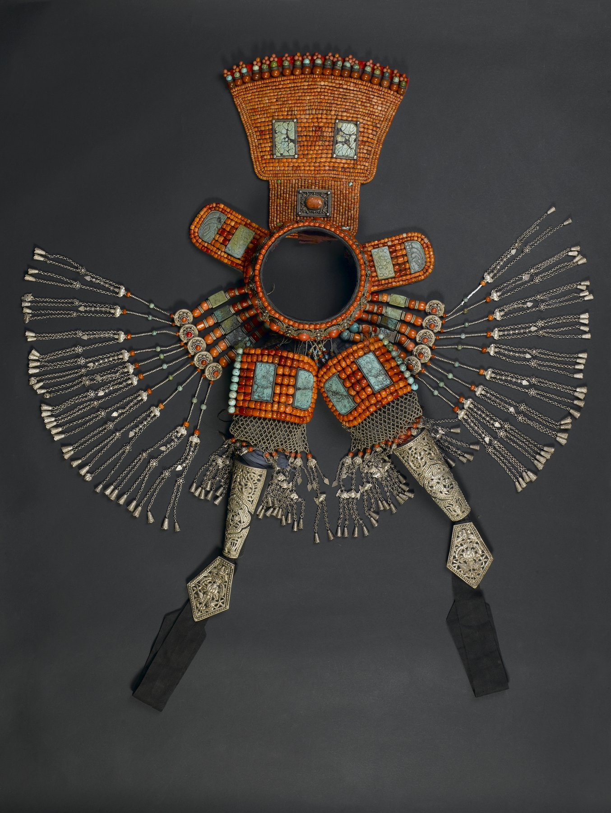

CHNT 170 · Imagining China from the Borders · Spring 2026
A digital catalog of objects from the Miao, Dong, Tibetan, Qiang, and Mongol communities, drawn from the Ruth Chandler Williamson Gallery at Scripps College and the Shanghai Museum’s Chinese Minority Nationalities’ Art Gallery.
Each page collects the existing and new pieces we wrote on for that community, with full descriptions, analysis, and citations.

Embroidery, batik, and the Butterfly Mother. Two pieces from the Ruth Chandler Williamson Gallery.
Enter the Miao section →
Spiraling silver and a Qing-dynasty ritual costume worn for the Lusheng dance.
Enter the Dong section →
A printing woodblock, an amulet box, and a kapala. Three Tibetan objects that hold devotion, protection, and a confrontation with death.
Enter the Tibetan section →
A household ritual altar and the figure of the shibi, the shaman who anchors Qiang ritual life.
Enter the Qiang section →
An Ordos women’s headdress in coral, silver, and turquoise. Wealth, blessing, and married identity worn on the body.
Enter the Mongol section →Every quotation, page number, and museum object linked back to its source.
View references →